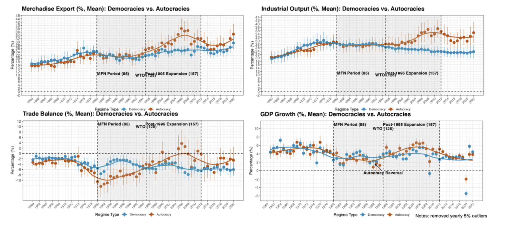

Globalization Origins of Autocratic Rise
Engaged Reformers, Autocratic Advantages, and the Post-Cold War Reversal
How have autocracies managed to re-emerge after 1990? The key boils down to the global trade system and a new form of autocracy: "Engaged Reformer."
Abstract
Conventional wisdom holds that globalization promotes political liberalization and that inclusive institutions favor growth. Yet after 1990, many autocracies not only consolidated but also outperformed comparable democracies economically, especially in trade. This article argues that globalization shifted the payoff structure of development in a way that advantages a specific authoritarian regime—economically engaged and reformed autocracies—in external demand competition, despite their weak internal demand. Autocratic institutional features, conventionally viewed as liabilities in closed economies—centralized authority or weak accountability—can become advantages under engagement-and-reform configurations. Specifically, trade integration and domestic reform jointly supply credibility for global market participation; on that basis, autocratic features become less costly levers for amplifying export competitiveness. This demand-competing advantage substitutes for politically inclusive institutions. Empirically, I connect macro-level patterns to micro-level mechanisms, showing how autocratic engaged reformers—accounting for over 90 percent of autocracies’ output and extending beyond China and oil states—outperformed in exports among broader economic outcomes. The findings reveal how globalization, interacting with domestic institutions, alters the institutional logic of competitive advantage, while exposing the limits of authoritarianism alone.
